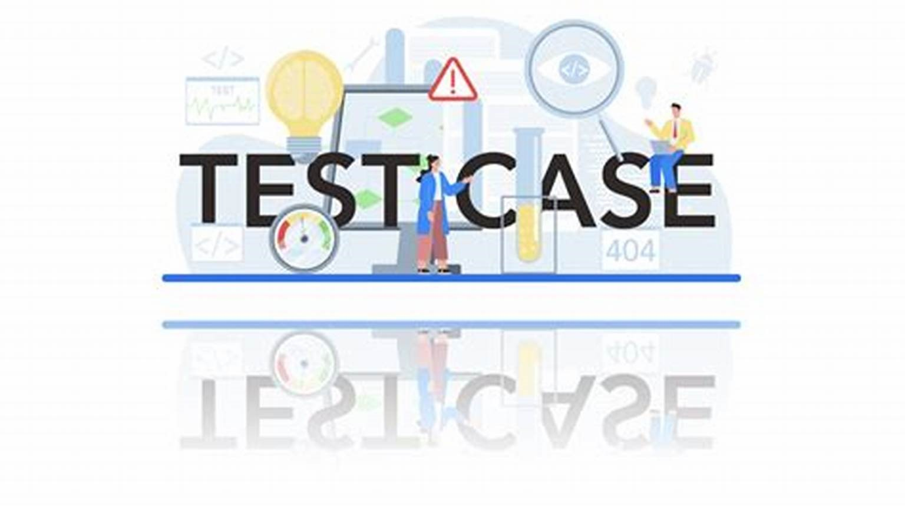

Test Cases
Важливість та Практичність тестових сценаріїв у процесі тестування програмного забезпечення
Тестові сценарії є ключовою складовою у процесі тестування програмного забезпечення. Вони допомагають
забезпечити, що
програмне забезпечення відповідає очікуванням функціональності, продуктивності та безпеки.
Що таке Тестові Сценарії?
Тестові сценарії - це детально описані кроки або умови, які використовуються для тестування функціональності програмного забезпечення. Кожен тестовий сценарій містить інформацію про вхідні дані, очікувані результати та послідовність кроків для виконання тесту. Тестові сценарії можуть бути розроблені для різних аспектів програмного забезпечення, включаючи його основні функції, інтеграцію з іншими системами, продуктивність, безпеку та стійкість.Важливість Тестових Сценаріїв
- Забезпечення якості продукту: Тестові сценарії допомагають виявити помилки та дефекти в програмному забезпеченні, забезпечуючи його відповідність вимогам та стандартам якості.
- Ефективність процесу тестування: Використання тестових сценаріїв дозволяє раціоналізувати процес тестування, оскільки вони надають чітку структуру та визначають очікувані результати для кожного тесту.
- Покращення комунікації: Тестові сценарії служать засобом комунікації між розробниками програмного забезпечення та тестувальниками, допомагаючи уточнити очікування щодо функціональності продукту.
- Відслідковування прогресу: Завдяки тестовим сценаріям можна відслідковувати прогрес тестування та визначити, які частини програмного забезпечення вже протестовані, а які ще потребують уваги.
Тестові сценарії (Test Cases) складаються з кількох ключових компонентів, які деталізують процес тестування конкретного аспекту програмного продукту. Ось основні складові тестового сценарію:
- Назва тесту (Test Name): Це унікальне ідентифікатор тестового сценарію, яке чітко вказує на його мету або функціональність, яка тестується.
- Опис (Description): Короткий опис або пояснення тестового сценарію, що розкриває його мету та область застосування.
- Вхідні дані (Input Data): Це вхідні параметри або дані, які необхідно ввести у програму перед виконанням тесту.
- Дії (Actions): Це конкретні кроки, які тестер повинен виконати під час тестування, включаючи взаємодію з програмним продуктом або системою.
- Очікувані результати (Expected Results): Це очікувані вихідні дані, результати або стан системи після виконання тестового сценарію.
- Перевірка (Verification): Це перевірка фактичних результатів тестування з очікуваними результатами для визначення того, чи пройшов тест успішно.
- Стан системи (System State): Це початковий стан системи або попередні умови, які необхідно забезпечити перед виконанням тесту.
- Умови (Preconditions): Умови, які мають бути виконані перед виконанням тесту, такі як попередні кроки або стан системи.
- Постумови (Postconditions): Умови або стани, які мають бути виконані після виконання тесту, такі як очікувані зміни стану системи.
Ці компоненти допомагають створити повний та структурований опис тестового сценарію, що дозволяє ефективно тестувати програмне забезпечення та визначити його відповідність вимогам і очікуванням користувачів.
Практичне Використання Тестових Сценаріїв
- Створення тестових сценаріїв: Розробники та тестувальники спільно розробляють тестові сценарії на основі вимог до програмного забезпечення та його специфікацій.
- Виконання тестів: Тестувальники виконують тестові сценарії, введені в них дані, виконують кроки тестування та аналізують результати.
- Відстеження дефектів: Якщо під час виконання тестових сценаріїв виявляються дефекти, їх фіксують у системі відстеження помилок для подальшого виправлення.
- Оновлення тестових сценаріїв: Тестові сценарії періодично оновлюються для відображення змін у вимогах до програмного забезпечення або його функціональності.
Заключні слова
Тестові сценарії є невід'ємною частиною процесу тестування програмного забезпечення. Вони допомагають
забезпечити якість
продукту, оптимізують процес тестування та сприяють ефективній комунікації між учасниками проекту.
Інвестування часу та
зусиль у розробку та виконання тестових сценаріїв є ключовим кроком у забезпеченні успішного випуску
програмного
продукту на ринок.